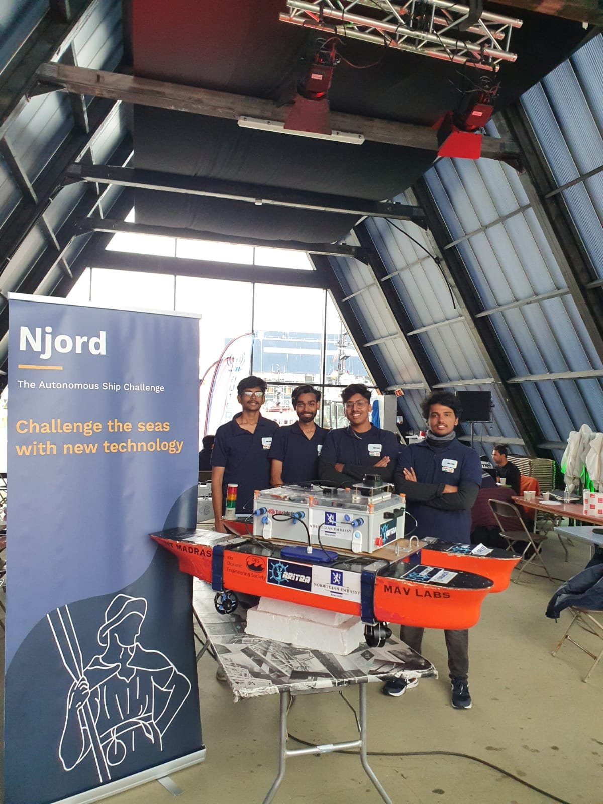
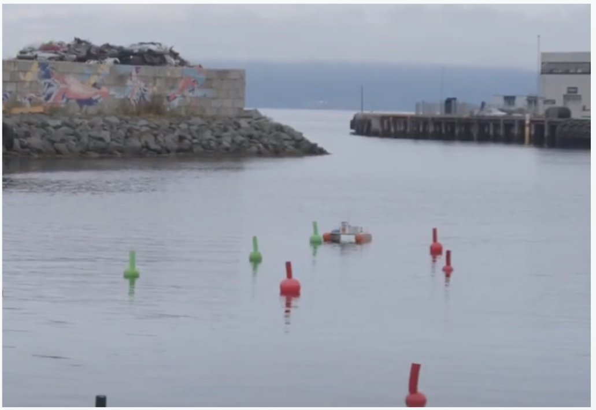
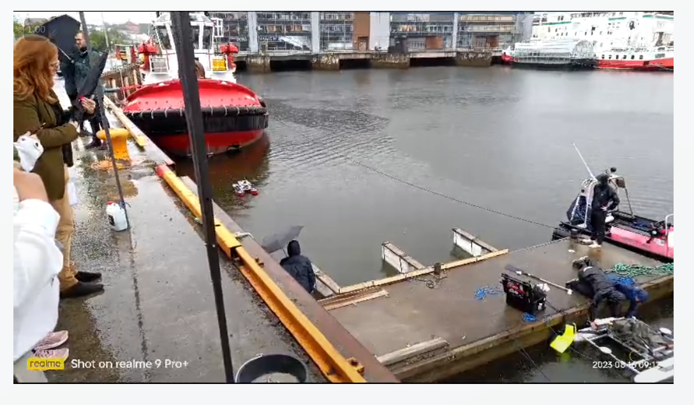
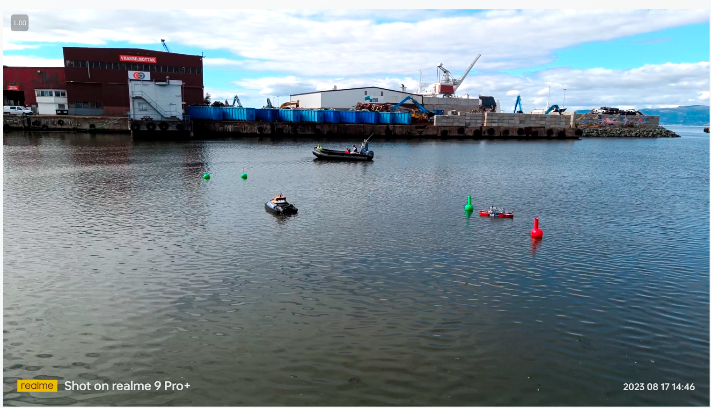

NJORD CHALLENGE 2023 - Technical Report
Team Aritra, IIT Madras
Team Members: Akash Vijayakumar, Mohammed Ibrahim, Amar Nath Singh, Rakshin Ramesh
Team Aritra
Aritra is a marine autonomy competition team from MAV LABS, Dept. of Ocean Engineering, IIT Madras. Our ASV is a catamaran autonomous boat manufactured in Central Fabrication Facility in IIT Madras by Aritra Team in order to participate in Njord Challenge 2023. This technical design report contains the plan, process, and design properties during the preparation.
1. About IIT Madras
Indian Institute of Technology Madras is known both nationally and internationally for excellence in technical education, basic and applied research, innovation, entrepreneurship and industrial consultancy. The Institute is proud to bear the laureate of being No.1 engineering university in India. More recently, IIT Madras has been given the title of Institute of Eminence.
MAV LAB
One of the finest laboratories in IIT Madras innovating in the field of marine autonomy from 2019. Major works include Hydrodynamic Response Analysis tool (Hydra) for prediction of dynamic motion of ships, Data driven control of ASV with Deep Reinforcement Learning for path following and obstacle avoidance, and System identification of Maneuvering Model.
2. Journey to the Njord Competition
Our journey began on August 7th, departing from Chennai Airport. We traveled through Frankfurt to Oslo and then Trondheim. The preparation involved unpacking equipment, assembling our ASV, and extensive testing in local water bodies.
Highlights of our journey included:
- Team presentation on August 14th
- Extensive testing until late evening (benefiting from Norway's late sunset)
- Networking with international teams
3. Competition Days Overview
Day 1: Maneuvering Tasks
We encountered a challenge with our lidar system overheating but managed to perform well in subsequent sub-tasks. Despite initial setbacks, we earned the highest score in one sub-task.
Day 2: The Docking Challenge
Faced with discharged batteries and challenging weather conditions, we partially completed the docking challenge.
Day 3: Obstacle Avoidance
With support from the Turkish team (who provided spare batteries) and improved conditions, we emerged as the top-performing team in the obstacle avoidance challenge.
4. Prize Ceremony
Our achievements at the Njord Challenge were remarkable:
- Third place overall
- Sustainability Award
- Prize of 10,000 NOK and a trophy
First place went to Turkey, with Portugal securing second place.
5. Design Strategy Highlights
- Catamaran design with flat-bottom displacement hull
- Four thrusters in X configuration for maximum maneuverability
- Modular bracket system for easy maintenance
- Advanced electrical system with efficient power distribution
- Custom Kalman filter for precise localization
- YOLO V8 Nano for buoy detection
6. Conclusion
The Njord Autonomy Challenge was a transformative experience that taught us invaluable lessons about marine autonomous systems, international collaboration, and real-world technological challenges.
Our future plans include participating in the Virtual Robotics Competition by RoboNation and RobotX, continuing to push the boundaries of marine autonomy.
Acknowledgements
Special thanks to the Royal Norwegian Embassy in New Delhi, IEEE OES Madras Chapter, MAV LABS, DOE IIT Madras, and Dr. Abhilash Sharma Somayajula for their support.
Project Gallery